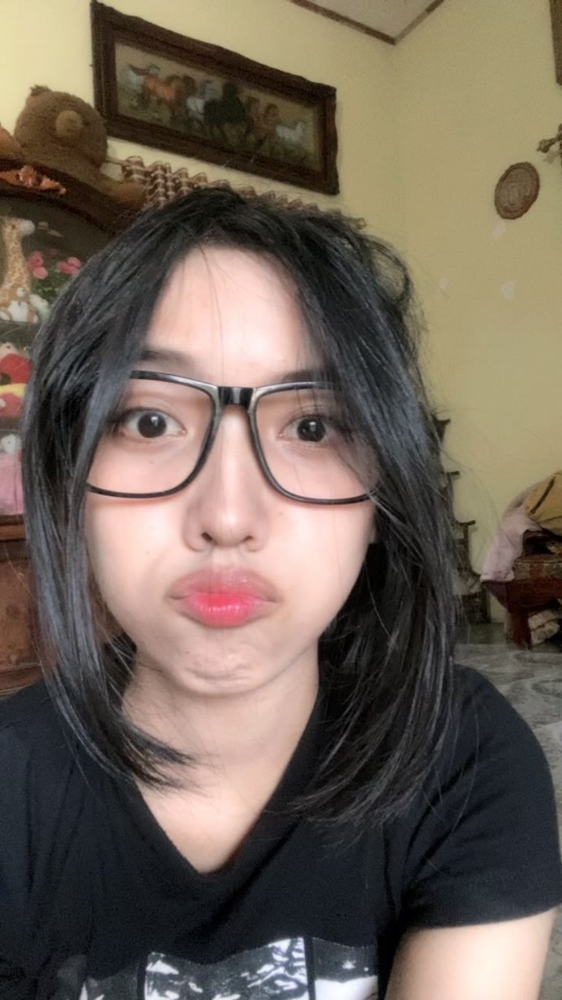
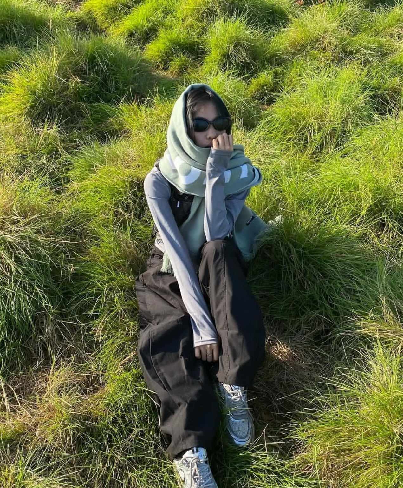
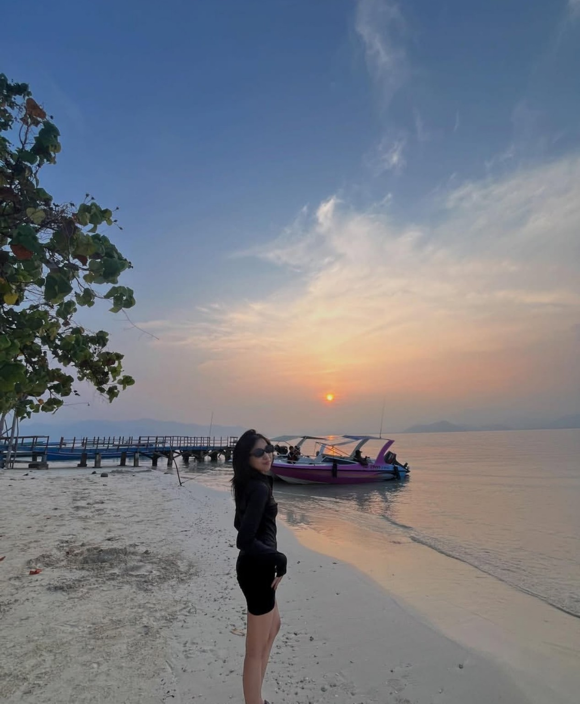
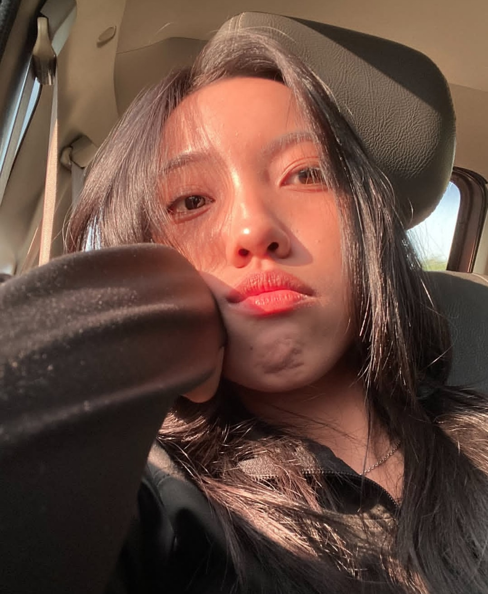

a little page, made only for you
Happy
My Girl Day
Untuk seseorang yang entah bagaimana
selalu berhasil membuat hari biasa terasa istimewa.
for my favorite person
Kalau kata-kata
punya hati, ini untukmu.
Aku nggak tahu sejak kapan tepatnya kamu berubah dari sekadar seseorang menjadi seseorang yang selalu aku cari di antara ramai. Tapi aku tahu satu hal: sejak ada kamu, ada bagian kecil dari hari-hariku yang terasa lebih hangat.
Kamu mungkin nggak selalu sadar betapa indahnya keberadaanmu. Cara kamu tersenyum, cara kamu bercerita, cara kamu menjadi dirimu sendiri tanpa perlu berusaha menjadi siapa-siapa—semuanya punya tempat sendiri di pikiranku.
Hari ini bukan cuma tentang mengucapkan Happy My Girl Day. Hari ini adalah alasan kecil untuk bilang bahwa aku bersyukur pernah dipertemukan dengan kamu. Dari sekian banyak manusia dan dari sekian banyak kemungkinan, semesta membiarkanku mengenal seseorang sepertimu.
Kalau suatu hari nanti kamu sedang capek, semoga kamu ingat bahwa ada seseorang yang selalu ingin melihatmu baik-baik saja. Kalau dunia terasa terlalu ramai, semoga kamu punya tempat untuk pulang. Dan kalau suatu hari kamu lupa betapa berharganya dirimu, izinkan aku mengingatkanmu lagi dan lagi.
Aku nggak janji semua hari akan selalu sempurna. Tapi kalau boleh memilih, aku ingin tetap ada di hari-hari yang sederhana: tertawa karena hal nggak penting, ngobrol sampai lupa waktu, melihat kamu bahagia, dan menyimpan momen-momen kecil yang suatu saat nanti akan kita rindukan.
Jadi, untuk kamu yang mungkin sedang membaca ini sambil tersenyum kecil—
terima kasih sudah menjadi kamu.
Semoga hari ini selembut senyummu, setenang tatapanmu,
dan seindah semua hal baik yang pantas kamu dapatkan.
little pieces of you
Beberapa alasan
kenapa kamu selalu indah.

Di balik ekspresi lucu itu, ada seseorang yang selalu berhasil membuatku tersenyum.

Bahkan ketika kamu sedang diam, entah kenapa kamu tetap punya cara untuk mencuri perhatian.
Di tempat seindah itu pun, mataku tetap punya alasan untuk memilih melihatmu.

Senja bisa datang sekali sehari, tapi kamu berhasil membuat hari-hariku terasa seperti senja yang indah.

Dan yang paling kusuka: versi kamu yang apa adanya, tanpa perlu menjadi siapa pun selain dirimu sendiri.
before this little story ends
Untuk kamu,
selalu.
Kalau halaman ini bisa menyimpan satu hal selamanya,
aku ingin menyimpan senyum kamu di dalamnya.
Selamat untuk hari kecil yang spesial ini.
Semoga kamu selalu menemukan alasan untuk bahagia,
dan semoga aku masih boleh menjadi salah satu alasan itu.
Happy My Girl Day 🤍